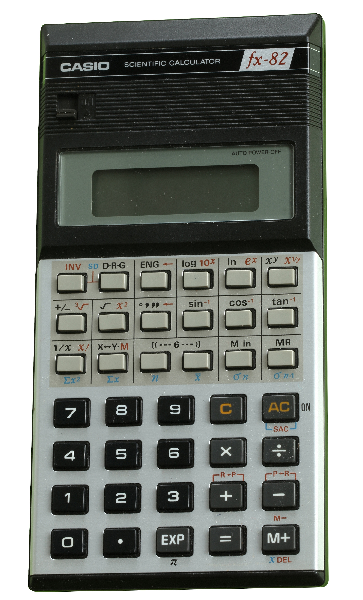

A drop-in replacement board for the fx-82. Same shell, same keys, a computer inside.

An exam-approved calculator is deliberately held back, because the rules require it. NumOS sits in the gap: the ergonomics and muscle memory of a calculator, without the artificial ceiling. You keep the device you already know and swap the board underneath it.
The device core compiles to WebAssembly and runs on a canvas, with the keypad as real buttons beside it. Nothing to install, no account, no key.
Casio streamlined and regionalised its line, so the fx-82 and fx-991 variants are close enough mechanically and electrically that a single board covers them. That is where the drop-in claim gets its leverage.
Ordered, built and partly tested. Keypad, math, boot, Wi-Fi and the camera header all work. The display connection is dead on arrival. That is the one defect that matters.
The display fix. Paadshi's own estimate is about a month, and it is an estimate, not a commitment. The v2 bar for done is narrow: screen works, keypad works, it boots, the camera header is sound.
An OV2640 over SCCB on a magnetic pogo-pin header, so the module can only mate the right way. Sold as an add-on, never bundled.
CrowdSupply, pre-launch. This list exists to get you the launch mail, nothing else.
Measured against the closest funded play, OpenMote, which raised about $125k from roughly 885 backers and ships in February 2027.
One field. No account, no payment, no newsletter. CrowdSupply handles checkout when the campaign opens, and this list only tells you it opened.